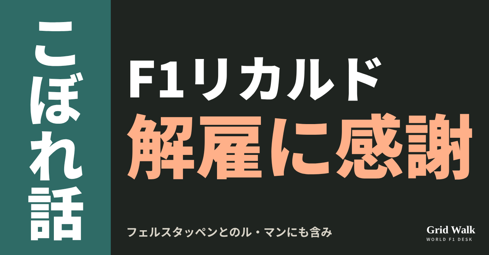
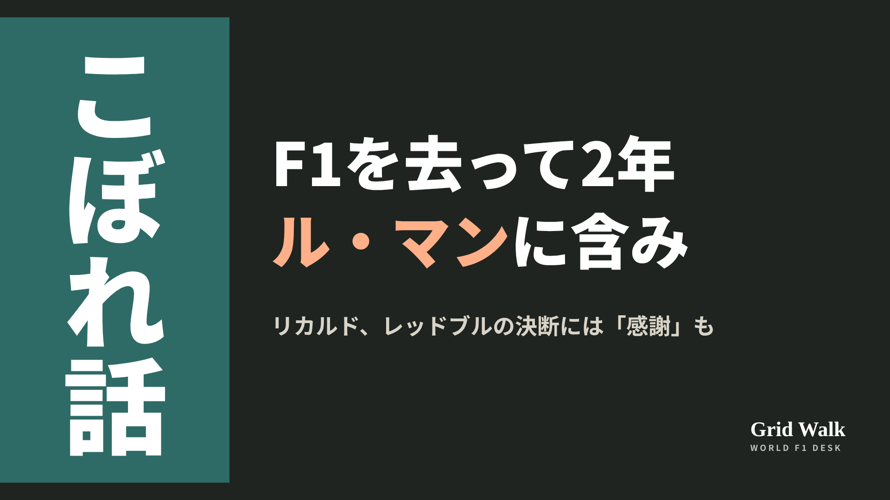
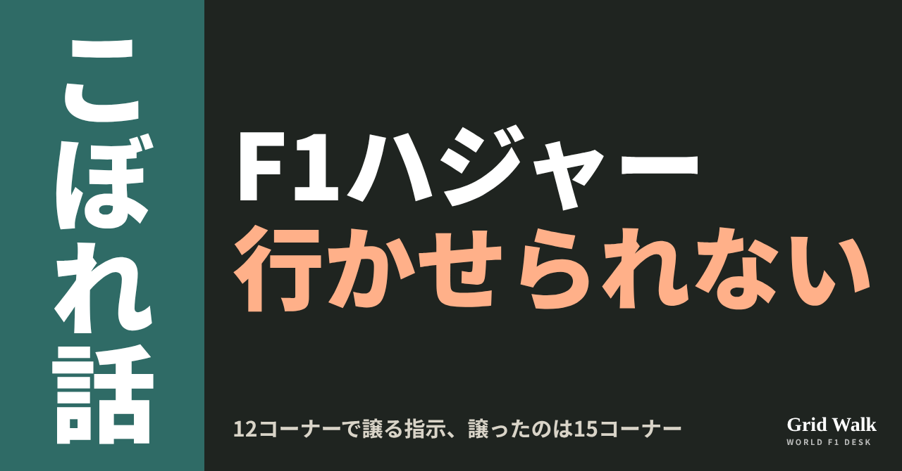
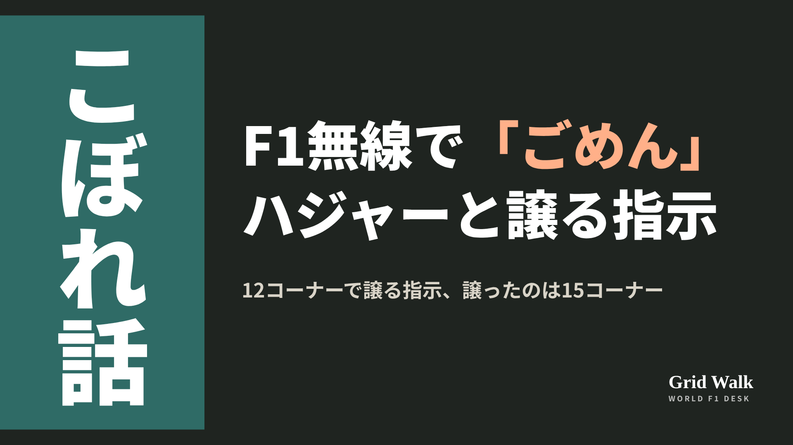
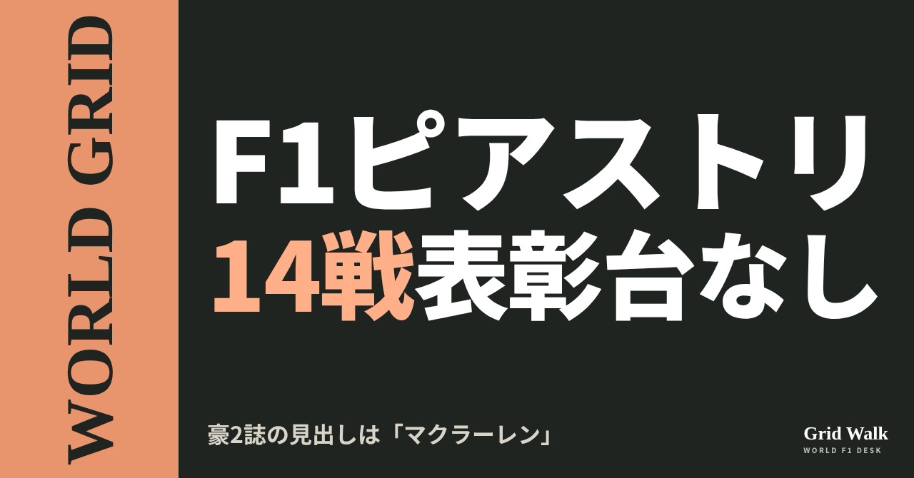
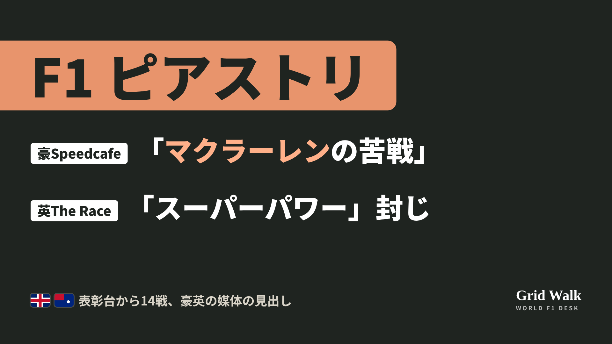

<meta charset="utf-8"><title>10/30のコラム note貼り付け</title>
<style>
/* one column of numbered paste steps; text steps vs image steps differ by marker */
:root{--bg:#F5F4F0;--card:#FFFFFF;--ink:#1D2321;--mute:#5F665F;--line:#DCDAD2;--btn:#1F5FBF;--btnok:#2E8B4F;--img:#E9F3EC;--imgink:#22663B;--sans:'IBM Plex Sans JP','Hiragino Sans','Noto Sans JP',sans-serif}
@media (prefers-color-scheme:dark){:root:not([data-theme="light"]){--bg:#171A19;--card:#202423;--ink:#ECEDE8;--mute:#A3AAA2;--line:#343937;--btn:#4D8BE6;--btnok:#3FA866;--img:#1E2C23;--imgink:#8FD3A6;color-scheme:dark}}
:root[data-theme="dark"]{--bg:#171A19;--card:#202423;--ink:#ECEDE8;--mute:#A3AAA2;--line:#343937;--btn:#4D8BE6;--btnok:#3FA866;--img:#1E2C23;--imgink:#8FD3A6;color-scheme:dark}
body{background:var(--bg);color:var(--ink);font-family:var(--sans);font-size:15px;line-height:1.75;padding:20px 16px 60px}
main{max-width:680px;margin:0 auto;display:grid;gap:28px}
header h1{font-size:22px;margin:0 0 6px;text-wrap:balance}
header p{margin:0;color:var(--mute);font-size:14px}
nav{display:flex;gap:8px;flex-wrap:wrap;margin-top:12px}
nav a{border:1px solid var(--line);border-radius:999px;padding:4px 14px;color:var(--ink);text-decoration:none;font-size:14px;background:var(--card)}
.part h2{font-size:18px;line-height:1.5;margin:0 0 12px;text-wrap:balance;display:flex;gap:10px;align-items:baseline;flex-wrap:wrap}
.tag{font-size:13px;background:var(--ink);color:var(--bg);border-radius:6px;padding:1px 9px}
.steps{list-style:none;margin:0;padding:0;display:grid;gap:12px}
.st{background:var(--card);border:1px solid var(--line);border-radius:12px;padding:12px;min-width:0}
.hd{display:flex;align-items:center;gap:8px;margin-bottom:8px}
.no{width:26px;height:26px;border-radius:50%;background:var(--btn);color:#fff;display:inline-flex;align-items:center;justify-content:center;font-size:13px;font-weight:700;flex:0 0 26px}
.im .no{background:var(--btnok)}
.hd em{font-style:normal;font-size:12px;background:var(--img);color:var(--imgink);border-radius:6px;padding:0 8px}
.bx{font-size:13.5px;line-height:1.7;border:1px solid var(--line);border-radius:8px;padding:8px 10px;max-height:110px;overflow:auto;overflow-wrap:anywhere}
.bx.tall{max-height:150px}.bx p{margin:0 0 6px}.bx h2{font-size:14px;margin:8px 0 4px}.bx a{color:var(--btn)}
.st img{display:block;width:100%;max-width:100%;border:1px solid var(--line);border-radius:8px}
.sub{font-size:12.5px;color:var(--mute);margin:6px 0 0}
.cp{width:100%;margin-top:8px;padding:12px;border:0;border-radius:10px;background:var(--btn);color:#fff;font:600 15px var(--sans);cursor:pointer}
.cp.ok{background:var(--btnok)}.cp.dl{background:var(--btnok)}.cp:focus-visible{outline:3px solid var(--ink);outline-offset:2px}
.xh{font-size:15px;margin:20px 0 10px}
.fb{font-size:13px;line-height:1.7;margin:8px 0 0;padding:8px 10px;border-radius:8px;background:var(--img);color:var(--imgink)}
.opts{display:grid;grid-template-columns:repeat(auto-fill,minmax(240px,1fr));gap:10px}
.opt{min-width:0}.opt img{display:block;width:100%;border:1px solid var(--line);border-radius:8px}
.ol{display:flex;align-items:center;gap:8px;margin-top:6px}.ol b{font-size:13px;flex:0 0 auto}.ol .on{font-size:12.5px;color:var(--mute);flex:1;min-width:0}.ol .cp{width:auto;flex:0 0 auto;padding:9px 14px}.ol .cp{margin:0;padding:9px}
.toast{font-size:13px;color:var(--mute);margin-top:6px}
</style>
<main><header><h1>10/30のコラム note貼り付け</h1><p>いま公開済みは3本です。青い番号は文章、緑は画像です。</p><nav><a href="#p1">1</a><a href="#p2">2</a><a href="#p3">3</a></nav></header><section class="part" id="p1"><h2><span class="tag">OFF GRID</span>リカルド、解雇に「感謝」も　フェルスタッペンとのル・マンに含み</h2><p class="sub">サイトに公開：17:10</p><ol class="steps">
<li class="st im"><div class="hd"><span class="no">1</span><b>見出し画像</b><em>画像</em></div><button class="cp dl" data-img="img/ricciardo-redbull-lemans-20261030.png" data-name="ricciardo-redbull-lemans-20261030_見出し画像.png">ダウンロード</button></li>
<li class="st"><div class="hd"><span class="no">2</span><b>タイトル</b></div><div class="bx" id="p1t">リカルド、解雇に「感謝」も　フェルスタッペンとのル・マンに含み</div><button class="cp" data-plain="p1t">タイトルをコピー</button></li>
<li class="st"><div class="hd"><span class="no">3</span><b>本文</b></div><div class="bx tall" id="p1r"><p>ダニエル・リカルドがF1を離れて2年。10月28日配信のF1のポッドキャスト「Beyond the Grid」（司会トム・クラークソン）で、シートを外されたことに、今は感謝している自分もいると振り返りました。一度きりのル・マンなら走ってみたい、相棒の候補にはフェルスタッペンも、という話まで出ています。</p><p>PlanetF1とCrash.netの記事の要約と、各媒体の元の記事へのリンクはサイトで → <a href="https://f1gridwalk.github.io/lens/ricciardo-redbull-lemans-20261030/?utm_source=note&amp;utm_campaign=ricciardo-redbull-lemans-20261030">https://f1gridwalk.github.io/lens/ricciardo-redbull-lemans-20261030/?utm_source=note&amp;utm_campaign=ricciardo-redbull-lemans-20261030</a></p><h2>「屈辱から隠れていた」</h2><p>最後のレースは2024年のシンガポールGP。レーシングブルズのシートはリアム・ローソンに渡りました（F1公式サイト）。</p><blockquote><p>「外に向けて『大丈夫、全部うまくいってる』と見せようとしていた」「結局は、屈辱という感覚から隠れていたんです」（リカルド、Beyond the Grid／RacingNews365・オランダ）</p></blockquote><p>RacingNews365によると、マクラーレンにいた2022年にも、モナコGPのレースの後、自分のチームに「もうこれはやりたくない」と口にしていたといいます。</p><h2>「引き金を引いてくれて」</h2><blockquote><p>「どう終わったかは、今も好きではありません。でも、彼らが引き金を引いてくれたことに感謝している自分もいます。今もこれを続けていたいとは思わないので」（リカルド、Beyond the Grid／Speedcafe・オーストラリア）</p></blockquote><p>4月のF1公式サイトの記事によると、番組「DRIVE with Jim Farley」でも「振り返ると、彼らが代わりに決めてくれたことに感謝していました」と話していました。</p><h2>ル・マンで「みんなが望むものを」</h2><p>Crash.netによると、リカルドは2025年9月に、レースからの引退を表明していました。今回は、少し違います。</p><blockquote><p>「1年前なら『もう二度とヘルメットはかぶらない。終わりだ。それだけ』と言っていたでしょう」「でも、もう少し自分の思うかたちでレースのキャリアを終えられたらいいな、という気持ちもどこかにあります」（リカルド、Beyond the Grid／Motorsport.com・イギリス）</p></blockquote><p>Motorsport.comによると、フルシーズンはまだ気が進まず、考えているのは「一度きりのル・マン」のようなもの。チームメイトが「最初のライバル」になるF1と違い、1台を分け合う本当のチームメイトと助け合いたいといいます。候補の話では、2016〜18年にレッドブルで同僚だったフェルスタッペンの名前が出ました。</p><blockquote><p>「彼にプレッシャーはかけたくないけれど、もちろんマックスは、リストの上のほうにいる名前です」「2018年のレッドブルの話や、『もしも』の話もしました」「それが、みんなが望むものを見せられる方法かもしれません」（リカルド、Beyond the Grid／Motorsport.com、Crash.net・イギリス）</p></blockquote><p>ただ、Crash.netによると、来季のGTの予定を聞かれたフェルスタッペンは「たぶんニュルブルクリンクとスパ。ル・マンはなし。今のところリストにはない」と答えています。</p><p>今のリカルドは、フォード・レーシングのグローバルアンバサダーです（2025年9月に発表、F1公式サイト）。戻るとしても正しい理由からで、おとぎ話のような結末を作るためではない、とも話しています（Speedcafe）。</p><p>編集部としては、「感謝」と「ル・マン」が同じ回で語られたところに、自分の手で区切りをつけたい気持ちが表れていると見ています。サイトのニュース要約は https://f1gridwalk.github.io/news/en-planetf1-ricciardo-redbull-exit/ と https://f1gridwalk.github.io/news/en-crash-ricciardo-verstappen-lemans/ にあります。</p><p><strong>リカルドとフェルスタッペンが同じ車でル・マンを走るなら、見てみたいですか？ 3人目にはだれを乗せたいですか？</strong></p><p>━━━━━━━━━━</p><p><strong>F1 Grid Walk では、世界のF1ニュースを毎日日本語でまとめています。</strong></p><p>海外の記事の要約を、毎日載せています。</p><p><a href="https://f1gridwalk.github.io/">https://f1gridwalk.github.io/</a></p><p>ほかの海外記事も読みたい方は、F1 Grid Walkへ。</p><p><a href="https://f1gridwalk.github.io/lens/ricciardo-redbull-lemans-20261030/">https://f1gridwalk.github.io/lens/ricciardo-redbull-lemans-20261030/</a></p><p>━━━━━━━━━━</p><p><a href="https://podcasts.apple.com/tr/podcast/daniel-ricciardo-refinding-myself-after-formula-1/id1405972616?i=1000798442747">出典：Apple Podcasts（F1 Beyond The Grid）（イギリス）</a></p><p><a href="https://racingnews365.com/daniel-ricciardo-reflects-on-f1-exit-humiliation-with-surprise-red-bull-stance">出典：RacingNews365（英語版）（オランダ）</a></p><p><a href="https://speedcafe.com/f1-news-2026-daniel-ricciardo-on-racing-bulls-exit-humiliation-comments-reaction-regret-interview-beyond-the-grid/">出典：Speedcafe（オーストラリア）</a></p><p><a href="https://www.crash.net/f1/news/1108608/1/daniel-ricciardo-teases-max-verstappen-reunion-le-mans-give-people-what-they-want">出典：Crash.net（イギリス）</a></p><p><a href="https://sports.yahoo.com/articles/why-daniel-ricciardo-consider-comeback-160004192.html">出典：Motorsport.com（Yahoo Sportsの転載）（イギリス）</a></p><p><a href="https://www.formula1.com/en/latest/article/ricciardo-opens-up-on-f1-career-coming-to-an-end-as-he-reveals-hes-grateful.2VwZO1mTyZKNR9SxlLeHmi">出典：F1公式サイト（イギリス）</a></p></div><button class="cp" data-rich="p1r">本文をコピー</button></li>
<li class="st"><div class="hd"><span class="no">4</span><b>ハッシュタグ</b></div><div class="bx" id="p1h">#F1 #F1jp #リカルド #ダニエルリカルド #フェルスタッペン #レッドブル #ルマン24時間 #BeyondTheGrid #F1こぼれ話 #OFFGRID</div><button class="cp" data-plain="p1h">タグをコピー</button></li>
</ol><h3 class="xh">X</h3><ol class="steps">
<li class="st im"><div class="hd"><b>X用の画像</b><em>画像</em></div><button class="cp dl" data-img="img/x_ricciardo-redbull-lemans-20261030.png" data-name="x_ricciardo-redbull-lemans-20261030.png">ダウンロード</button></li>
<li class="st"><div class="hd"><b>① noteをシェアするときの文</b></div><div class="bx" id="p1x0">リカルドがF1のポッドキャストで、レッドブルにシートを外されたことに「感謝している自分もいる」と話しました。一度きりのル・マンなら、相棒の候補にフェルスタッペンの名前も。noteにまとめました #F1jp #リカルド</div><button class="cp" data-plain="p1x0">コピー</button></li>
<li class="st"><div class="hd"><b>② ①への返信</b></div><div class="bx" id="p1x1">ほかの海外記事も読みたい方は、F1 Grid Walkへ。
https://f1gridwalk.github.io/lens/ricciardo-redbull-lemans-20261030/?utm_source=x&amp;utm_campaign=ricciardo-redbull-lemans-20261030</div><button class="cp" data-plain="p1x1">コピー</button></li>
<li class="st"><div class="hd"><b>③ ②への返信</b></div><div class="bx" id="p1x2">毎日の海外F1ニュースは、日本語でこちらにまとめています。
https://f1gridwalk.github.io/</div><button class="cp" data-plain="p1x2">コピー</button></li>
</ol></section><section class="part" id="p2"><h2><span class="tag">OFF GRID</span>ハジャー「行かせられない」　クルサードは「一瞬、雇い主がだれか忘れた」</h2><p class="sub">サイトに公開：17:11</p><ol class="steps">
<li class="st im"><div class="hd"><span class="no">1</span><b>見出し画像</b><em>画像</em></div><button class="cp dl" data-img="img/hadjar-team-order-20261030.png" data-name="hadjar-team-order-20261030_見出し画像.png">ダウンロード</button></li>
<li class="st"><div class="hd"><span class="no">2</span><b>タイトル</b></div><div class="bx" id="p2t">ハジャー「行かせられない」　クルサードは「一瞬、雇い主がだれか忘れた」</div><button class="cp" data-plain="p2t">タイトルをコピー</button></li>
<li class="st"><div class="hd"><span class="no">3</span><b>本文</b></div><div class="bx tall" id="p2r"><p>アメリカGPの決勝、2位を走っていたハジャーに、チームから無線が入りました。後ろから来るフェルスタッペンを先に行かせるように、という指示です。ハジャーの返事は、断りの言葉でした。結局は少し先のコーナーで譲りましたが、中継で解説していたデイビッド・クルサードは、この返事を見逃しませんでした。</p><p>PlanetF1、F1-Insider、GPblogの元の記事へのリンクはサイトで → <a href="https://f1gridwalk.github.io/lens/hadjar-team-order-20261030/?utm_source=note&amp;utm_campaign=hadjar-team-order-20261030">https://f1gridwalk.github.io/lens/hadjar-team-order-20261030/?utm_source=note&amp;utm_campaign=hadjar-team-order-20261030</a></p><h2>無線で「ごめん」</h2><p>2人は違う作戦でした。F1公式サイトのピット記録では、フェルスタッペンは13周目と31周目の2回ピットに入り、ハジャーは25周目の1回だけです。フェルスタッペンが先にタイヤを替えて追いついてきたとき、ハジャーはまだピットに入っていませんでした。F1公式の動画は、指示が出たときハジャーは2位を走っていたと説明しています。</p><p>イギリスのPlanetF1とドイツのF1-Insiderによると、指示は12コーナーでフェルスタッペンを前に出すように、というものでした。両誌が伝えた無線のやり取りはこうです。</p><blockquote><p>ハジャー「レースの時間を失いたくない。彼を行かせられない。ごめん」　リチャード・ウッド「いや、これでいくんだ」（PlanetF1／イギリス、F1-Insider／ドイツ）</p></blockquote><p>リチャード・ウッドはハジャーのレースエンジニアです。両誌によると、こう退けられたあと、ハジャーは15コーナーでフェルスタッペンを前に出しました。</p><p>フェルスタッペンの側にも無線がありました。オランダのGPblogは、ハジャーの後ろで時間を失った場面のフェルスタッペンの言葉を、チームへの皮肉として伝えています。</p><blockquote><p>「ありがとう、みんな。ほんとにいい作戦だね。乱れた空気の中で動けない……」（フェルスタッペン、チーム無線。GPblog／オランダ）</p></blockquote><h2>クルサード「一瞬、雇い主がだれか忘れた」</h2><p>元レッドブルのドライバーで、このレースをF1TVで解説していたクルサードは、こう話しました（PlanetF1が伝えた英語から訳しています）。</p><blockquote><p>「ここで取り決めを、もう一度おさらいしておきましょう！」「少し厳しく見えるかもしれません。でも彼（フェルスタッペン）は勝ちを重ねてきたドライバーで、順番の入れ替え方をよく分かっています」「アイザックはいい週末を送っていますが、あの件ではお小言をもらうでしょう」「心ここにあらずで、一瞬、雇い主がだれか忘れた」（クルサード、F1TVの解説。PlanetF1／イギリス。かっこ内は編集部が補いました）</p></blockquote><p>F1-Insiderは「もめごとになる？」という問いの形の見出しを付けました。ただ、レッドブルが実際にハジャーに注意したかどうかは、どちらの記事にも書かれていません。サイトのニュース要約は https://f1gridwalk.github.io/news/de-f1insider-hadjar-verstappen-team-order/ と https://f1gridwalk.github.io/news/en-planetf1-hadjar-team-orders/ にあります。</p><h2>ハジャー「2人にとって混乱した状況」</h2><p>ハジャーはレース後、こう説明しています。GPblogがレース当日に伝えた言葉です。</p><blockquote><p>「彼が後ろから弾丸みたいにやってきて、2人にとって混乱した状況でした。それで、行かせました」「でも、彼は僕の乱れた空気の中にいるから、僕のせいで彼はタイムを失う」「僕は譲らないといけないから、タイムを失う」「それは、簡単な1ストップのレースになると予想していなかったからです」（ハジャー、GPblog／オランダ）</p></blockquote><p>F1公式サイトのグリッドの記事によると、3番グリッドから出たハジャーは6位、2番グリッドから出たフェルスタッペンは3位でした（順位はPlanetF1）。</p><p>編集部としては、レースの時間を失いたくないハジャーと、2回ピットのフェルスタッペンを前に出したいチーム、どちらにも理由があったと見ています。作戦が分かれた時点で、こうした場面は起こりうるものだったのかもしれません。</p><p><strong>2位を走っていて、後ろから違う作戦のチームメイトが来たら、あなたならすぐに譲りますか？</strong></p><p>━━━━━━━━━━</p><p><strong>F1 Grid Walk では、世界のF1ニュースを毎日日本語でまとめています。</strong></p><p>海外の記事の要約を、毎日載せています。</p><p><a href="https://f1gridwalk.github.io/">https://f1gridwalk.github.io/</a></p><p>ほかの海外記事も読みたい方は、F1 Grid Walkへ。</p><p><a href="https://f1gridwalk.github.io/lens/hadjar-team-order-20261030/">https://f1gridwalk.github.io/lens/hadjar-team-order-20261030/</a></p><p>━━━━━━━━━━</p><p><a href="https://f1-insider.com/formel-1-droht-aerger-verstappen-hadjar-83306/">出典：F1-Insider.com（ドイツ）</a></p><p><a href="https://www.planetf1.com/news/isack-hadjar-red-bull-team-orders-max-verstappen-us-gp">出典：PlanetF1（イギリス）</a></p><p><a href="https://www.gpblog.com/en/news/hadjar-reveals-untold-details-of-tense-verstappen-moment-during-us-gp">出典：GPblog（英語版）（オランダ）</a></p><p><a href="https://www.gpblog.com/en/news/verstappen-hits-out-at-red-bull-over-hadjar-handling-really-good-strategy-there">出典：GPblog（英語版）（オランダ）</a></p><p><a href="https://www.formula1.com/en/results/2026/races/1297/united-states/pit-stop-summary">出典：F1公式サイト（イギリス）</a></p><p><a href="https://www.formula1.com/en/latest/article/official-grid-who-starts-where-for-the-2026-united-states-grand-prix.3eD3xBDo1wI0V0VIWo2wMY">出典：F1公式サイト（イギリス）</a></p><p><a href="https://www.formula1.com/en/video/2026-united-states-grand-prix-hadjar-argues-over-team-order-to-let-verstappen-through.1880059143175867752">出典：F1公式サイト（イギリス）</a></p></div><button class="cp" data-rich="p2r">本文をコピー</button></li>
<li class="st"><div class="hd"><span class="no">4</span><b>ハッシュタグ</b></div><div class="bx" id="p2h">#F1 #F1jp #ハジャー #フェルスタッペン #レッドブル #アメリカGP #チームオーダー #クルサード #F1こぼれ話 #OFFGRID</div><button class="cp" data-plain="p2h">タグをコピー</button></li>
</ol><h3 class="xh">X</h3><ol class="steps">
<li class="st im"><div class="hd"><b>X用の画像</b><em>画像</em></div><button class="cp dl" data-img="img/x_hadjar-team-order-20261030.png" data-name="x_hadjar-team-order-20261030.png">ダウンロード</button></li>
<li class="st"><div class="hd"><b>① noteをシェアするときの文</b></div><div class="bx" id="p2x0">アメリカGP、フェルスタッペンに譲る指示にハジャーは無線で「彼を行かせられない。ごめん」。解説のクルサードは「一瞬、雇い主がだれか忘れた」と辛口。noteにまとめました #F1jp #ハジャー</div><button class="cp" data-plain="p2x0">コピー</button></li>
<li class="st"><div class="hd"><b>② ①への返信</b></div><div class="bx" id="p2x1">ほかの海外記事も読みたい方は、F1 Grid Walkへ。
https://f1gridwalk.github.io/lens/hadjar-team-order-20261030/?utm_source=x&amp;utm_campaign=hadjar-team-order-20261030</div><button class="cp" data-plain="p2x1">コピー</button></li>
<li class="st"><div class="hd"><b>③ ②への返信</b></div><div class="bx" id="p2x2">毎日の海外F1ニュースは、日本語でこちらにまとめています。
https://f1gridwalk.github.io/</div><button class="cp" data-plain="p2x2">コピー</button></li>
</ol></section><section class="part" id="p3"><h2><span class="tag">WORLD GRID</span>ピアストリ14戦表彰台なし　豪2誌の見出しは「マクラーレン」</h2><p class="sub">サイトに公開：17:12</p><ol class="steps">
<li class="st im"><div class="hd"><span class="no">1</span><b>見出し画像</b><em>画像</em></div><button class="cp dl" data-img="img/piastri-struggles-20261030.png" data-name="piastri-struggles-20261030_見出し画像.png">ダウンロード</button></li>
<li class="st"><div class="hd"><span class="no">2</span><b>タイトル</b></div><div class="bx" id="p3t">ピアストリ14戦表彰台なし　豪2誌の見出しは「マクラーレン」</div><button class="cp" data-plain="p3t">タイトルをコピー</button></li>
<li class="st"><div class="hd"><span class="no">3</span><b>本文</b></div><div class="bx tall" id="p3r"><p>アメリカGP7位のマクラーレンのオスカー・ピアストリについて、イギリスのThe Raceは10月29日、「『スーパーパワー』は封じられた」という見出しで分析を出しました。一方、今回開いたオーストラリアのSpeedcafeとAuto Actionの記事5本は、どれも見出しに「マクラーレン」を入れていました。</p><p>豪英の見出しの違いと、元の記事へのリンクはサイトで → <a href="https://f1gridwalk.github.io/lens/piastri-struggles-20261030/?utm_source=note&amp;utm_campaign=piastri-struggles-20261030">https://f1gridwalk.github.io/lens/piastri-struggles-20261030/?utm_source=note&amp;utm_campaign=piastri-struggles-20261030</a></p><h2>数字で見る今季</h2><p>F1公式の順位表では、ピアストリはドライバーズ選手権7位の144点で、6位のチームメイト、ランド・ノリス（211点）とは67点差です。今季18戦でピアストリは未勝利、ノリスはハンガリーとオランダで2勝。最後の表彰台は5月のマイアミGPの3位です。</p><p>豪Speedcafeによると、表彰台なしは14戦続いていて、メキシコでも逃せば、デビューした2023年の最初の15戦と並ぶキャリア最長になります。</p><h2>「毎周が違う」オースティン</h2><p>The Raceによると、予選の対戦ではノリスが16勝8敗ですが、平均の差は0.040秒しかありません。差が開くのは決勝で、オースティンでは平均して0.5秒遅いペースが続き、22秒後ろでゴールしました（要約はサイトに https://f1gridwalk.github.io/news/en-therace-piastri-struggles-explained/ ）。</p><p>見出しの「スーパーパワー」は、レース後のアンドレア・ステラ代表の言葉です。</p><blockquote><p>「今年は、特にオスカーにとって難しい。オスカーのスーパーパワーは、積み上げることだからです。一度基準をつくれば、周回を重ねるごとに、とても効果的に積み上げていける。でも、ここでは毎周が違う」（ステラ代表、Motorsport.com／イギリス）</p></blockquote><p>ピアストリは、レース前の木曜の記者会見で、去年うまくいっていたことが、今年は多くの週末で自分の足を引っぱってきたと話した、と豪Auto Actionが伝えています。アメリカGPの週末には、PlanetF1などの取材にこう話しました（要約はサイトに https://f1gridwalk.github.io/news/en-planetf1-mclaren-upgrades-stella/ ）。</p><blockquote><p>「今週末はいくつかアップデートがあって、それは期待どおりに働いている」「どのアップデートも、車を本当に運転しやすくしてくれてはいない。それが、ぼくらのいちばんの問題なんだ」（ピアストリ、PlanetF1／イギリス）</p></blockquote><h2>豪2誌の見出しは「マクラーレン」</h2><p>Speedcafeはレース後、「ピアストリ、マクラーレンの苦戦に答えを見つけられず」。Auto Actionは「ピアストリのオースティンでの苦戦、マクラーレンはレッドブルと同点に」。メキシコGPの週には、Speedcafeが「ピアストリ、レッドブルとのコンストラクターズ争いでマクラーレンは劣勢と認める」、Auto Actionが「ピアストリ、マクラーレンの巻き返しを信じる」。レース前のAuto Actionも「ピアストリ、マクラーレンはまだ速さが足りないと認める」でした。5本とも、見出しにノリスの名前はありません。</p><p>Speedcafeは、低速での扱いか、予測のしにくさか、と聞かれたピアストリの答えを載せています。</p><blockquote><p>「両方少しずつ。とにかく、この車から性能を引き出すのが、すごく、すごく難しい」「それができれば、そこそこ速いと思う。でも、それをやろうとするのが、昨日も言ったように、すごく、すごく大変なんだ」（ピアストリ、Speedcafe／オーストラリア）</p></blockquote><p>ただ、ノリスとの差に触れないわけではありません。公共放送のABCはレースの速報で、ピアストリは序盤に、速いノリスを先に行かせるようチームから指示された、と書いています。</p><h2>The RaceとAutosportは、ノリスとの違いへ</h2><p>イギリスのAutosportは「『とても適応力がある』ことが、アメリカGPでノリスにピアストリを上回らせた理由」と、見出しで2人を比べました。Sky Sportsの解説者マーティン・ブランドルは、コラムでこう書いています。</p><blockquote><p>「オスカーは、どうしても2026年のマシンとかみ合わないようだ。去年の見事な戦いぶりのあとだけに、見ていてつらい」（マーティン・ブランドル、Sky Sports／イギリス）</p></blockquote><p>The Raceは、今季、車のほうがピアストリに合ってくることはなく、2027年に向けてマクラーレンがこの際どい性格を消せる保証もない、と書きました。</p><p>編集部としては、豪2誌の5本は見出しでチームの状況の中にピアストリを置き、イギリスのThe RaceとAutosportは、ピアストリとノリスの走らせ方の違いに踏み込んだ、と見ています。</p><p><strong>ピアストリの苦戦、あなたなら見出しに「マクラーレン」と「スーパーパワー」のどちらを入れますか？</strong></p><p>━━━━━━━━━━</p><p><strong>F1 Grid Walk では、世界のF1ニュースを毎日日本語でまとめています。</strong></p><p>海外の記事の要約を、毎日載せています。</p><p><a href="https://f1gridwalk.github.io/">https://f1gridwalk.github.io/</a></p><p>ほかの海外記事も読みたい方は、F1 Grid Walkへ。</p><p><a href="https://f1gridwalk.github.io/lens/piastri-struggles-20261030/">https://f1gridwalk.github.io/lens/piastri-struggles-20261030/</a></p><p>━━━━━━━━━━</p><p><a href="https://www.the-race.com/formula-1/superpower-neutered-piastris-fresh-f1-struggles-explained/">出典：The Race（イギリス）</a></p><p><a href="https://www.formula1.com/en/results/2026/drivers">出典：Formula1.com（イギリス）</a></p><p><a href="https://www.formula1.com/en/results/2026/races">出典：Formula1.com（イギリス）</a></p><p><a href="https://www.formula1.com/en/latest/article/antonelli-wins-thrilling-miami-grand-prix-from-norris-and-piastri.2bxaKuYKJjxlXx8KOJf7lc">出典：Formula1.com（イギリス）</a></p><p><a href="https://sports.yahoo.com/articles/why-mclaren-gave-team-order-171533997.html">出典：Motorsport.com（Yahoo Sports掲載）（イギリス）</a></p><p><a href="https://www.planetf1.com/news/mclaren-reveals-planned-upgrades-amid-oscar-piastri-concern">出典：PlanetF1（イギリス）</a></p><p><a href="https://speedcafe.com/f1-news-2026-united-states-grand-prix-austin-oscar-piastri-what-happened-updated-latest-race-comments-lando-norris-george-russell/">出典：Speedcafe（オーストラリア）</a></p><p><a href="https://speedcafe.com/f1-news-2026-mexico-city-grand-prix-oscar-piastri-thoughts-commments-mclaren-constructors-championship-red-bull-battle/">出典：Speedcafe（オーストラリア）</a></p><p><a href="https://autoaction.com.au/2026/10/23/oscar-piastri-mclaren-form-red-bull-austin-2026">出典：Auto Action（オーストラリア）</a></p><p><a href="https://autoaction.com.au/2026/10/26/piastris-austin-struggle-leaves-mclaren-level-with-red-bull">出典：Auto Action（オーストラリア）</a></p><p><a href="https://autoaction.com.au/2026/10/30/piastri-backs-mclaren-to-fight-back">出典：Auto Action（オーストラリア）</a></p><p><a href="https://www.abc.net.au/news/2026-10-26/f1-live-united-states-grand-prix-kimi-antonelli-oscar-piastri/106998708">出典：ABC News（オーストラリア）</a></p><p><a href="https://www.autosport.com/f1/news/why-being-very-adaptive-gave-norris-edge-over-piastri-at-us-gp/10868691/">出典：Autosport（イギリス）</a></p><p><a href="https://www.skysports.com/f1/news/13604035/united-states-gp-martin-brundles-verdict-on-outstanding-kimi-antonelli-win-in-austin-and-oscar-piastris-struggles-in-2026-f1-cars">出典：Sky Sports（イギリス）</a></p></div><button class="cp" data-rich="p3r">本文をコピー</button></li>
<li class="st"><div class="hd"><span class="no">4</span><b>ハッシュタグ</b></div><div class="bx" id="p3h">#F1 #F1jp #オスカーピアストリ #ピアストリ #マクラーレン #ランドノリス #アメリカGP #WORLDGRID #海外F1</div><button class="cp" data-plain="p3h">タグをコピー</button></li>
</ol><h3 class="xh">X</h3><ol class="steps">
<li class="st im"><div class="hd"><b>X用の画像</b><em>画像</em></div><button class="cp dl" data-img="img/x_piastri-struggles-20261030.png" data-name="x_piastri-struggles-20261030.png">ダウンロード</button></li>
<li class="st"><div class="hd"><b>① noteをシェアするときの文</b></div><div class="bx" id="p3x0">ピアストリは14戦表彰台なし。オーストラリアの2誌は見出しに「マクラーレン」を入れ、英国の分析はノリスとの差に踏み込みました。伝え方の違いをnoteにまとめました #F1jp #ピアストリ</div><button class="cp" data-plain="p3x0">コピー</button></li>
<li class="st"><div class="hd"><b>② ①への返信</b></div><div class="bx" id="p3x1">ほかの海外記事も読みたい方は、F1 Grid Walkへ。
https://f1gridwalk.github.io/lens/piastri-struggles-20261030/?utm_source=x&amp;utm_campaign=piastri-struggles-20261030</div><button class="cp" data-plain="p3x1">コピー</button></li>
<li class="st"><div class="hd"><b>③ ②への返信</b></div><div class="bx" id="p3x2">毎日の海外F1ニュースは、日本語でこちらにまとめています。
https://f1gridwalk.github.io/</div><button class="cp" data-plain="p3x2">コピー</button></li>
</ol></section></main><script>
function done(b,msg){const t=b.dataset.t||b.textContent;b.dataset.t=t;b.classList.add('ok');b.textContent=msg||'コピーしました';setTimeout(()=>{b.classList.remove('ok');b.textContent=t},2000)}
function selectEl(el){const r=document.createRange();r.selectNodeContents(el);const s=getSelection();s.removeAllRanges();s.addRange(r)}
async function rich(el,b){
  try{await navigator.clipboard.write([new ClipboardItem({'text/html':new Blob([el.innerHTML],{type:'text/html'}),'text/plain':new Blob([el.innerText],{type:'text/plain'})})]);done(b);return}catch(e){}
  selectEl(el);let ok=false;try{ok=document.execCommand('copy')}catch(e){}
  if(ok){getSelection().removeAllRanges();done(b)}else{done(b,'選択しました。コピーしてください')}}
async function plain(el,b){
  try{await navigator.clipboard.writeText(el.innerText);done(b);return}catch(e){}
  selectEl(el);let ok=false;try{ok=document.execCommand('copy')}catch(e){}
  if(ok){getSelection().removeAllRanges();done(b)}else{done(b,'選択しました。コピーしてください')}}
let dlns=null;(async()=>{try{dlns=await window.claude?.use?.("downloads")}catch(e){dlns=null}})();
async function img(src,b){
  b.dataset.t=b.dataset.t||b.textContent;
  if(!dlns){try{dlns=await window.claude?.use?.("downloads")}catch(e){}}
  if(!dlns){b.textContent='ダウンロードできませんでした';setTimeout(()=>{b.textContent=b.dataset.t},3500);return}
  try{const blob=await fetch(src).then(r=>r.blob());b.textContent='保存の確認を開いています…';
    await dlns.save({filename:b.dataset.name,data:blob});done(b,'ダウンロードしました')}
  catch(e){const c=e&&e.code;b.textContent=c==='declined'?'キャンセルしました':c==='rate_limited'?'少し待ってからもう一度押してください':'ダウンロードできませんでした';setTimeout(()=>{b.textContent=b.dataset.t},3500)}}
document.querySelectorAll('.cp').forEach(b=>b.addEventListener('click',()=>{
  if(b.dataset.rich)rich(document.getElementById(b.dataset.rich),b);
  else if(b.dataset.plain)plain(document.getElementById(b.dataset.plain),b);
  else img(b.dataset.img,b)}));
</script>